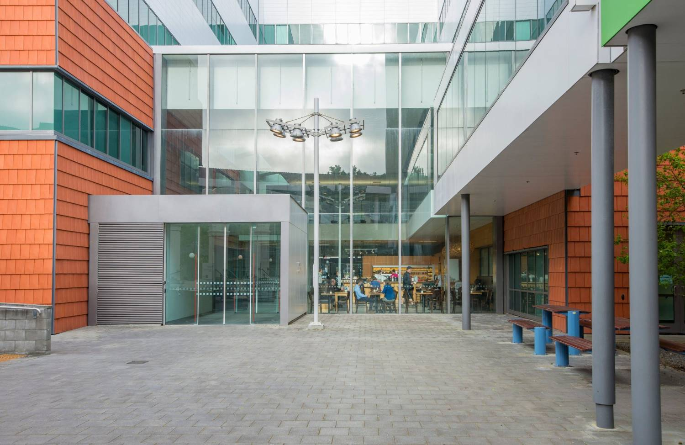
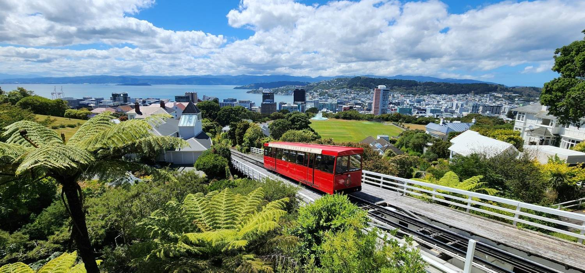
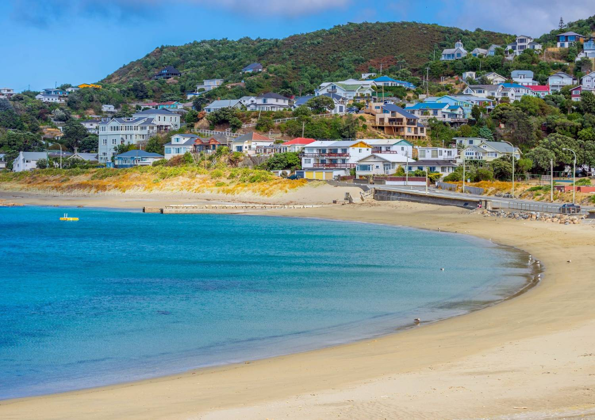

Nau mai, haere mai
Welcome to Wellington
Clint, Biby, Caitlyn & Haddin
A note from Sophie
Two years, and here we are
Kia ora Clint. We have been working towards this move together for two years, and on the 30th you finally get on the plane.
It has taken a little longer to get here than any of us expected, so I can’t wait to get the message that says you have landed.
Almost everything anyone has sent you so far has been about the job, the paperwork and the dates. This book is about everything around it: where to live, what a Wellington winter is actually like, where Caitlyn might go to ballet or gymnastics, where Biby can take Haddin to meet other parents, and all the small things nobody thinks to mention before you move to the other side of the world.
As you know, I lived in Wellington myself, so I’ve tried to include the things I learned from actually living there, not just the things you can find online.
The next few months will be a little unusual. You go first, and Biby, Caitlyn and Haddin will follow once you are settled, within the six months allowed under your relocation arrangements.
Being apart won’t always be easy, but going first does give you time to get to know Wellington properly. You can stand inside a house before you take it, work out the commute for real, explore the neighbourhoods and start finding the places your family will actually use.
And you arrive just as Wellington is coming out of winter, so the days only get longer from here.
I’ve made Caitlyn a little book of her own too. Her own guide to New Zealand, written especially for a six-year-old, so she has something that belongs to her in all of this as well.
Dip into this rather than feeling you need to read it from beginning to end. And if there’s something you want to know that isn’t in here, email me and I’ll find it out for you. That is easier than you think, and it is the part of the job I like.
Sophie Careem · Ethicare Resourcing
What is in here
What is in here
Everything in here, in roughly the order you will need it. Page numbers run along the bottom.
The city itself
Wellington is small, and that is the point
Everything is close. The commute, the coffee, the coast and the hills all sit inside twenty minutes, and that one fact is why people who love it love it.
Getting here
Getting here, and your first night
Cochin to Wellington is the better part of a day in the air with one stop in Singapore, and you will land tired.
Pack for cold. Properly.
You are arriving at the end of a Wellington winter, and nothing in Kerala has prepared you for a southerly. It is not the temperature, it is the wind and the damp. A warm waterproof coat and decent shoes are the two things we would put in the case at home, before you are buying them here in a hurry.
At the airport
Biosecurity is stricter here than you are used to, and the officers are friendly about it as long as you declare. Anything edible, anything wooden, anything that has been on a farm or up a hill. Declaring costs nothing; not declaring carries an instant fine. If in doubt, tick the box.
Wellington airport is small and eight kilometres from the city. A taxi or Uber into Newtown takes twenty minutes, with a rank outside the door.
The first twenty-four hours
Sleep when it gets dark here, however wrong it feels. Morning light fixes jet lag faster than anything, so a walk on your first morning beats a lie-in. Most people we move say they feel like themselves again within a few days.
Ringing home is easier from here than you think
Wellington runs six and a half to seven and a half hours ahead of Kerala, which lands better than almost any other posting. Your evening is early afternoon at home. You can finish a shift, walk back across the road and call Biby while Caitlyn is still up and about. Families moving to Britain or Canada do not get that, and it makes the six months a great deal shorter.
Message us when you land, whatever the hour it is in London. We would like to know you got there.
Your first four weeks
Your first month, across the road from work
Your accommodation is arranged: four weeks at the Sojourn Apartment Hotel on Riddiford Street, directly opposite the hospital. For a month, your commute is crossing the road.
Newtown, which is where you will be
You have been put in the most interesting suburb in the city, which is a good place to be on your own for a month. Newtown is where Wellington keeps its Ethiopian, Somali, Indian and Malaysian food, its best cheap lunches and a genuinely good Sunday market. There is a supermarket on Riddiford Street, a chemist, and about a dozen places to eat within five minutes of your door.
The month is usually enough time to find somewhere permanent. Most people start viewing in their first week and have keys by the fourth. The one thing that catches people in the maths is that there is usually a week between signing a tenancy and moving in.
Calling in before your start date
You are staying across the road, so there is nothing stopping you putting your head in before your first shift, and everyone we have sent has been glad they did. Annie Bergmann manages the anaesthetic technician team and Andrew Ditchburn is your clinical supervisor. An hour usually covers it: uniform sized, access card, payroll and IT started before any of it is urgent, and you find the theatre entrance and the coffee with nothing at stake.

Where to live
Wooden houses, stacked up a hill
Most of Wellington is timber villas and bungalows on slopes. They are lovely, and they are the reason the next two pages exist.
Where to live
Finding somewhere to live
Areas within easy reach of the hospital, and what each one is like. We cannot judge individual streets from London; the department can.
Two things shape the decision. School places here are tied to your address, so it pays to know which zone a house sits in before you take it, even while the timings are still open. And Wellington is built on hills, which sounds charming until you are carrying a sleeping one-year-old and the shopping up ninety steps in the wind.
Flat ground is a real feature here
Most Wellington listings do not mention the steps. If a place is up a hillside, ask the agent how many there are between the car and the front door, and whether there is off-street parking. With a pram and a six-year-old it changes daily life more than an extra bedroom does.
Further out, Johnsonville, Ngaio and Khandallah are on the train line north, and Miramar and Strathmore sit out by the airport. All of them are commutable. Rents and travel time both move as you go out.
The people who will know a street properly are the ones you work with. Ask around the department in your first week. A fair number of Wellington rentals change hands that way before they are ever listed.
Applying for a place
What to have ready before the first viewing
Wellington rentals are competitive and they tend to go to whoever applies first and cleanest. This is the one part of it you can win on preparation alone.
You will be applying against people who have a New Zealand rental history and a local credit record, and you have neither yet. That is not held against you, but it does mean a landlord has less to go on, so the more complete your file the easier the decision is for them. Most agents take applications on the spot at a viewing or by email straight after, so having everything on your phone matters more than you would think.
What agents here ask for
Bond, and what nobody can ask you for
Bond is capped at four weeks’ rent and is lodged with Tenancy Services, a government body, rather than held by the landlord. So nobody can ask you for extra bond to make up for a thin file, and nobody can ask for rent more than two weeks in advance. If either comes up, it is not allowed.
Wellington houses
Cold houses, and what to look for
Wellington doesn’t get brutally cold by international standards. The surprise is how cold a house can feel when the temperature outside doesn’t look particularly dramatic.
Many Wellington homes are timber, and older properties can feel much colder and damper than you expect. Heating, insulation, sunlight and ventilation matter more than the size or the look of the house.
Think about this carefully for your family. It will be completely different from the climate you, Biby and the children are used to in Kerala, Caitlyn and Haddin may never have experienced a Wellington winter, and a warm, dry home is the one thing we wouldn’t compromise on.
Two things you’ll see a lot of here
A dehumidifier is extremely useful through the wetter months, particularly in bedrooms and any room where condensation builds up. A heated clothes airer, or a good indoor drying set-up, is worth having too: Wellington weather doesn’t always cooperate with washing day, and drying clothes indoors without enough ventilation puts moisture back into the house.
Neither is something to buy immediately. See what your eventual home already has, and how it feels, first.
When you’re looking at a place
Ask which way the main living areas face, and what fixed heating there is. Look for condensation at the windows and damp or mould around curtains, wardrobes and external walls. Ask about insulation and to see the Healthy Homes information. None of this is unusual at a viewing.
Coming from Kerala, you may be tempted to think that ten degrees doesn’t sound particularly serious. Don’t choose your Wellington home by the number on the weather app.
A warm, dry home with good sun will matter more to your family’s first Wellington winter than an extra bedroom or a slightly bigger garden.
The first weeks
Your first fortnight, in a sensible order
What to sort in your first couple of weeks. Only the IRD number is genuinely urgent — the rest can take the fortnight.
You are all arriving as residents, which quietly removes a lot of this
Most people who move here spend years on a work visa watching an expiry date. You are not in that position. All four of you hold residence from the outset: Biby can work for anyone, Caitlyn enrols as a domestic student with no fees, all four of you can use the public health system from the day you land, and there is no renewal cycle ahead.
- 01
The bank account
Yours may already be part-opened from Cochin. Finishing it takes passports and visas over a counter, and it needs to be live before your first pay run.
- 02
Your IRD number
Payroll needs it before the first pay run, or you are taxed at a higher rate until it catches up. The one with money attached.
- 03
A New Zealand mobile number
Letting agents, schools and the medical centre all ask for one, and an overseas number puts you to the back of the queue.
- 04
A doctor, for you
Enrolled patients pay less and get continuity. See the page on finding one.
- 05
Have a look at the local schools
No need to enrol anyone until you know the dates. But you can walk into the schools near a house you like and see them for yourself, which is something Biby cannot do from Kerala.
- 06
Your driving licence
Your Indian licence is valid here for a limited period from the day you land. Converting has a queue, so it is a date to know early.
Getting around
Eight kilometres across, hills in the way
You can walk most of Wellington. That is unusual for a capital city, and it is one of the reasons the days feel longer here.
Getting around
Getting around, and whether you need a car
Plenty of Wellington families run one car, and some run none. Give it a few months before you decide. There is no hurry to buy.
The city is about eight kilometres across. Buses are frequent and the Snapper card works on all of them; children travel free at weekends and cheaply during the week. A good bus route counts for more here than a second car.
When you get to the point of buying something, send us the listing. We have talked enough people through this to spot a tidy one.
Money
What things cost, month to month
Wellington is expensive, and the first few supermarket shops will be a shock. Most families find the maths works once the first full pay run lands.
The bills that arrive
Your payslip will look simpler than you expect
There is no National Insurance equivalent, so it is income tax, KiwiSaver and student loan if you have one. Tax is deducted at source and most people never file a return. Give payroll your IRD number and tax code before the first run and it sorts itself.
Groceries and eating out are the two that feel dearest coming from Kerala. Petrol, cars and electronics are cheaper than you might expect.
Money, continued
The things nobody mentions
KiwiSaver, insurance and ACC. Half an hour each, and all three are easier to set up now than to fix later.
ACC is the one that works differently
Accident Compensation covers everyone in New Zealand for accidental injury, including visitors, regardless of whose fault it was. Treatment is covered and there is income support if you cannot work. In exchange you largely cannot sue for personal injury. It is a genuinely good system and it catches people out because there is no equivalent at home.
Running a house here
Rubbish, recycling and the domestic stuff
Wellington uses council bags for rubbish and a separate crate for glass. It sounds trivial until it is your first week and your bin has been left on the kerb.
In Wellington, general rubbish goes out in official council bags bought from supermarkets and dairies, or in a wheelie bin if your place has a private collection. Recycling is separate and free: a yellow-lid bin or bag for plastics, tins and paper, and a crate for glass, which is collected separately and has to be left out loose rather than bagged.
Collections are weekly and on a fixed day for your street, put out the night before. Your landlord or the neighbours will tell you which day; the council website will too if you put the address in.
The bits that catch people out
Glass genuinely does have to be in its own crate, and a bin with glass in it may simply be left. Garden waste is not collected at all, so it is a trip to the transfer station or a private bin. And there is no food waste collection in most of the city yet, so it goes in the general rubbish.
Other small domestic things
Tap water is excellent everywhere and nobody buys bottled. Most houses have no mains gas, so cooking and hot water run on electricity, which is part of why the power bill is what it is. Post is slower than you will be used to and deliveries are left on doorsteps without much ceremony.

Food and coffee
More cafés per head than New York
Wellington takes coffee seriously to a degree that is genuinely funny. You will find your regular within a fortnight.
Food and shopping
Where to shop, cheapest first
You will not have to give up the food you grew up on. Newtown is the best suburb in the city for it, and you happen to be living in it for a month.
The supermarkets, in order of price
And the fresh stuff
The Harbourside Market runs Sunday mornings by Te Papa — fruit and vegetables at well under supermarket prices, and the city’s best morning out once the family are here.
Supermarket spice aisles here are small and expensive, so almost nobody buys them there. Rice, dal, spices, curry leaves and coconut all come from the Indian grocers instead, and the next page is a list of them.
Malayali families here say the only genuinely hard things to get are fresh fish the way you know it, and banana leaf.
A little taste of home
Where to find the food from home
You will not need a suitcase full of food from Kerala. Wellington has a good Indian grocery scene, and the most useful shop is a few minutes from the hospital.
Clint — start in Newtown
You do not need to cross the city when you first arrive. Manga The Foodstore, 218A Riddiford Street, is a short walk from the hotel and carries Indian groceries, spices and everyday cooking ingredients. Start there, and keep the rest of this page for when you know where you are living.
Indian groceries and spices
For wider Asian ingredients there is also Wellmart in Te Aro, Oriental Pantry on Willis Street and Asian Food Specialist in Kilbirnie.
A little taste of home
Clothing, jewellery and the celebrations
Thinner on the ground than the food, and mostly over in the Hutt. This is the part where the community will serve you better than any search.
Ask the Malayali community first
For occasion wear, children’s Indian clothes and anything for Onam, Christmas or Easter, local families will know home-based sellers, visiting collections and community sales that never appear online. That is a far better route than pretending Wellington has an Indian fashion district, and it is one of the things we can help open a door to.
Halal and specialist butchers are straightforward here, with several in Newtown and Kilbirnie. Familiar hair and skin products are easiest from the Indian grocers above, which tend to carry a small range alongside the food.
Onam is celebrated properly in Wellington every year, and it is usually the first thing a new Malayali family gets invited to.
Setting up
A house with nothing in it
Unfurnished here often means genuinely empty. No fridge, no washing machine, sometimes no curtains. And your container will still be somewhere on the water.
Shipping from India usually takes six to ten weeks door to door, plus a biosecurity inspection at this end that can add a week or two. So most families need a bridge: enough to live on for about two months without buying a houseful of things twice.
What people do
Second-hand is completely normal here and carries no stigma at all. Trade Me is the national marketplace and it is where most households are furnished; Facebook Marketplace is good for large items nobody wants to move. Between them you can put a whole house together in a fortnight for a fraction of new.
A fridge and a washing machine are the two to buy properly, because you will use them daily for years. Almost everything else can wait for the container.
Keep these where you can reach them
Passports and visas, both children’s immunisation records, Caitlyn’s school reports, your registration documents, your shipping inventory and marriage and birth certificates. Landlords, schools and the bank all ask for originals at some point, and they are the one set of things that must not go in the container.
When the container lands you will be asked to be there for the biosecurity inspection. Anything wooden, anything that has been in a garden, and anything with soil on it gets a proper look.
When they follow
When Biby and the children come
Twenty-odd hours from Cochin with a one-year-old and a six-year-old, one adult, and one stop in Singapore. Most of what makes it bearable gets booked, not packed.
The single most useful thing is a seat of his own for Haddin, with his car seat strapped into it. Under-twos can travel on a lap, but on a flight this long with Caitlyn as well, one adult cannot really do it. Check the airline will take that seat on board when you book; approval goes by the label on it.
Request a bassinet too, though at around a year old he will probably be over the limit. Pay for allocated seating if it is offered. Passports, visas, both children’s immunisation records and Caitlyn’s school reports travel in the cabin bag.
Singapore is a kind place to break a journey with small children. Changi has free play areas in every terminal, showers, and quiet corners to feed a baby, and if the layover runs long there are hotels inside the transit area so nobody has to clear immigration. If the connection is a tight one, that is the thing to look at before booking.
You cannot collect them without car seats fitted
Restraint law here is strict: an approved child restraint until a child’s seventh birthday, correctly fitted. Check what suits Haddin’s age and weight on nzta.govt.nz before you buy. Whatever you are driving by then, have Haddin’s seat and Caitlyn’s booster in and checked before you set off for the airport. It is the single most common thing that goes wrong on the day families are reunited.
Tell Caitlyn early, and let her say proper goodbyes to people and places. A photo book of home, made before she leaves, is worth more than anything bought after she arrives.
For Caitlyn
Caitlyn’s school, and how zoning works
At six, Caitlyn will most likely go into Year 2. Schools place on age and prior schooling together, so her reports are the thing to have to hand when the time comes.
The thing to understand about New Zealand schools is zoning. Popular state schools take children who live inside a defined catchment, and living in the zone is what guarantees the place. Out-of-zone places go to a ballot. So her school and your address are really one decision, which is why this page sits near the suburbs one.
Children here start school on their fifth birthday and must be enrolled by six, so they join partway through the year instead of all together in September. That works in Caitlyn’s favour whenever she arrives: she will not be walking into a class that formed months earlier without her. And because you hold residence, enrolment is not something that has to be arranged far in advance.
Check the zone before you sign a tenancy
Every school publishes its enrolment zone map, and the boundaries genuinely run down the middle of streets, so check the exact address and not just the suburb. Ten minutes on a school’s own website now can save moving house later. How to judge the schools themselves is the next page.
Because you hold residence, Caitlyn enrols as a domestic student. State schooling is free, with no international fees. Expect the usual extras though — voluntary donations, trips, uniform and stationery.
For Caitlyn
How to judge a school here
There is no league table in New Zealand, but there is a proper inspectorate and it writes for parents. The Education Review Office is the closest thing to Ofsted, and its reports are free and public.
ERO, and its reports
ero.govt.nz — the Education Review Office is a government department independent of the Ministry and of the schools. It visits every state and private school, kura and early childhood service, on average every three years and more often where something is going wrong. It observes classes, looks at student work, and talks to teachers, leaders, the board and parents. Then it publishes a report on that school.
Useful timing for you: ERO rewrote its report format in 2026 specifically so parents can read them, with clearer findings and next steps. Older reports on the site are still in the previous format, so check the date on whatever you are reading.
Start with ERO’s own guide for parents
ERO published a Guide to Schools for parents and whānau, at evidence.ero.govt.nz. It explains what makes a school good, how to read a report, how to arrange a visit and what to ask while you are there, and what to do if something concerns you later. For someone judging a school system they did not grow up in, it is the single most useful thing on this page.
Their advice on visiting is worth repeating: do not turn up out of the blue. Ring or email and ask them to show you round.
And the factual side
educationcounts.govt.nz holds the school directory: type, year levels, roll size, and how the roll has moved over recent years. A roll falling steeply is worth asking about. Note that the old decile numbers were never a quality score — they set funding by the make-up of the community a school served, and were replaced by the Equity Index in 2023. You will still see them quoted on property listings. Ignore them.
For Caitlyn
After school, and the holidays
The school day here finishes at three, which is earlier than you may be used to, and the holidays are longer. Both are worth knowing before Biby plans any work.
Most primary schools run an after-school programme on site until around six, and many run a before-school one too. They are subsidised, well established and where a lot of children make their friends. Places go quickly at the popular schools, so it is one to ask about when you are looking round.
The school year, which is upside down
The year runs from late January to mid December, in four terms with two-week breaks between them, and a long six-week summer holiday over Christmas and January. Caitlyn will join partway through a year, which is completely normal here.
Holiday programmes run in every break, through councils, schools and sports clubs. They are the standard answer for working parents and they book up early, particularly the summer one.
Sport and clubs
Junior sport is organised through schools and local clubs and it is inexpensive. Saturday morning sport is close to a national institution and it is one of the fastest ways for both Caitlyn and her parents to meet people. Swimming, netball, football and rippa rugby are the usual starting points at six.
For Caitlyn
Clubs and sport, and where to find them
Sport first, with dance and gymnastics on the next page. Nothing is selective at six — Sport New Zealand’s line is “Balance is Better”, meaning no trials, no benching, everyone plays.
How to actually get her into things
Two routes work. The school newsletter carries almost everything local, so that is the first place to look once she is enrolled. And Nuku Ora, the regional sports trust, lists junior clubs by sport and suburb across greater Wellington.
Winter sport registrations open around February and March and close early. Summer sport, including cricket and athletics, signs up in September.
Saturday morning sport is close to a national institution, and it is the fastest way for Biby to meet other parents. The touchline is where most of it happens.
For Caitlyn
Dance, gymnastics and music
All widely available here and none of it selective at six. Most studios run terms alongside the school year, so January and February is when places open.
Gymnastics
Popular and well organised, usually starting with a preschool or beginner class and moving into recreational grades. Gymnastics New Zealand at gymnasticsnz.com has a club finder covering the whole Wellington region, including Capital Gymnastics in the city and Naenae Olympic out in the Hutt, which is one of the country’s better known clubs.
Ballet and dance
Private studios do most of the teaching, and there are plenty across the city and the Hutt. Most follow either the Royal Academy of Dance syllabus, which will be familiar, or the New Zealand Association of Modern Dance one. Both publish teacher directories, and either is a reasonable way to find a studio near wherever you settle.
Something rather nice, five minutes from the hotel
The Royal New Zealand Ballet and the New Zealand School of Dance are both based at Te Whaea on Hutchison Road, in Newtown. The national ballet company is essentially round the corner from where you are staying. They tour and perform through the year, and taking Caitlyn to see them once she is here is a considerably better introduction than any class.
Music
Group music classes for young children run through community centres and private teachers, and most primary schools offer instrument tuition from about Year 3. Worth waiting until she is settled at school before adding it.
For local studios, the school newsletter is again the best source. Every dance school in the catchment advertises there at the start of the year.
For Haddin
Registering Haddin, and what he gets
Everything for under-fives is free here, but none of it finds you automatically from overseas. Two phone calls switch the whole lot on.
- 01
Enrol him with a general practice
Daytime GP visits and prescriptions are free for children under fourteen, and the practice is where his immunisations happen. As residents you are eligible from the day you land, with no waiting period.
- 02
Enrol him with a Well Child provider
This is the one people miss. Normally a midwife signs a family up at birth, so arriving with a baby already born, you do it yourself. Whānau Āwhina Plunket is the largest provider and covers all of Wellington. Ring them, say you have just arrived from overseas with a one-year-old, and they will pick him up mid-programme.
What Well Child actually is
A free series of health and development checks from birth to five, usually with a nurse: growth, feeding, sleep, hearing, vision, teeth and development. Universal, not means-tested, and used by almost every family.
Plunket also run free playgroups and coffee groups in every suburb. For Biby those will matter as much as the checks do.
For Haddin
Immunisations, teeth and the number for 3am
Immunisations and dental care are free until he is eighteen. Arriving part-way through Kerala’s schedule just means the nurse maps one onto the other.
The schedule may not line up with Kerala’s
Immunisations fall at 6 weeks, 3 months, 5 months, 12 months and 15 months, then four years. Free for every child under eighteen, given at your practice.
Bring Haddin’s immunisation record on paper, not as a photo on a phone. The nurse maps what he has had onto the New Zealand schedule, and anything missing is caught up free.
One to stop worrying about: rotavirus cannot be caught up anywhere, since the first dose must be given before fifteen weeks. At six months his is settled either way. What falls due around his arrival is the twelve and fifteen month set.
If you do want childcare, it is the one to look at early
Entirely your call, and plenty of families here keep a one-year-old at home. But if Biby is thinking about work, or simply wants a couple of mornings, under-two places are the scarcest in Wellington and the dearest, because they are staffed at a higher ratio. Waiting lists run to months. A name on a list costs nothing and commits you to nothing.
For the family
Support you may be eligible for
Four kinds of family support worth checking. Eligibility depends on your circumstances, not just on holding residence, and none of it arrives automatically. Inland Revenue is the place to confirm what applies to you.
All in one place
Every one of these is checked and applied for through ird.govt.nz, which will tell you what you are eligible for once your IRD number is live and it knows you have children. Set up a myIR account in your first fortnight and the rest follows from there. If anything looks borderline, ring them; they are used to new arrivals.
If any of it looks confusing once you are here, send us a message. We would far rather spend twenty minutes on it than have you leave money unclaimed for a year.
For Biby
Biby’s first few months
Biby, this page is for you, and it is the one we most want read. The partner in a move like this does the most and gets asked about it least.
You will arrive to a house Clint has already chosen, a school already found and a city he can navigate. That sounds like the easy end of the deal and it is often the harder one. He will have had six months of colleagues, a routine and a reason to leave the house every morning. You arrive into all of it at once, with a one-year-old and a six-year-old and nobody yet to ring.
The families we move tend to say the same thing about the first three months: the work is the easy part, and the loneliness catches you sideways. Knowing that in advance seems to help.
What tends to work
Plunket run free playgroups and coffee groups in every suburb, and they are the fastest way to meet other parents with children the same age. Caitlyn’s school gate does the same job. The Wellington Malayali community is well established and welcoming, and the library service runs free baby and toddler sessions in most suburbs.
You have exactly the same standing to ring us as Clint does. Partners almost never do, and we wish they would. If you want to talk to someone who arrived here the same way you are about to, say the word and we will introduce you.
Working here, if and when you want to
Your residence means you can work for anyone, in any role, with no employer sponsorship and no permission to seek. If you trained in a regulated profession, the relevant board will assess your qualification, and we can point you at the right one. If you would rather not work for a while, that is equally fine and nobody here will ask you to justify it.

Weekends with the children
The red cable car
Five minutes from Lambton Quay to the top of the Botanic Gardens. Caitlyn will ask to go again before you have reached the bottom.
With the children
Days out with Caitlyn and Haddin
Te Papa, Zealandia, the zoo and the cable car are the four you will use most. All are close, and two of them are free.
Swimming is treated as a life skill here rather than a hobby, and in a city surrounded by water that makes sense. Council pools run learn-to-swim in blocks that follow the school terms, and the younger groups fill quickly, so so Caitlyn’s name is a good one to put down early.
The beaches on the south coast are wild and windy and the children will love them. Lyall Bay for a calm morning, Island Bay for rock pools.
A few more, for when you have done those

Weekends
Fifteen minutes from your front door
The south coast is properly wild, and it is closer to the city than most people believe.
Getting out of the city
Weekends, and further afield
Once you have a car, a great deal opens up inside an hour. These are all comfortable day trips.
Further, once you are confident
Palliser Bay and the Putangirua Pinnacles are two hours round the coast and feel like nowhere else. Mount Ruapehu is four hours north for snow in winter, which will be a novelty for all four of you. And the Marlborough Sounds, off the end of the ferry, are worth a long weekend in their own right.
Further, once you are confident
Palliser Bay and the Putangirua Pinnacles are two hours round the coast and feel like nowhere else in the country. Mount Ruapehu is four hours north for snow in winter, which will be a novelty for all four of you. And the Marlborough Sounds, off the end of the ferry, are worth a long weekend of their own.
The weather changes its mind
Wellington can do four seasons before lunch, and the forecast is more of an opinion than a promise. Take a jacket even when it looks settled, especially on the coast. Locals do not check the forecast so much as look out of the window and shrug. Long weekends are frequent here and the whole country moves, so book ahead over Labour Weekend, Easter or Waitangi.
Long weekends are frequent here and the whole country moves. Book anything over Labour Weekend, Easter or Waitangi well ahead.
Finding your people
Finding your people
The Malayali community here is well established, Syro-Malabar Mass is celebrated in the main cities, and you will hear te reo Māori from your first shift.
The Malayali community
There is a well-established Keralan and wider Malayali community in Wellington, with Onam celebrated properly every year. Families who have arrived through us have generally been welcomed in within weeks. If you would like an introduction before you land, we will make one.
Church
Wellington has a full Catholic life, and Syro-Malabar Mass is celebrated in the main New Zealand cities. We can find out the current arrangements here and let you know before you arrive, so that first Sunday is not spent searching.
Te reo Māori
You will hear it from day one and nobody expects fluency. Kia ora is hello and thank you at once. Whānau is family, and it stretches wider than the four of you. Tamariki is children, kai is food, mahi is work. In the hospital you will hear all of these daily. Having a go is what counts, and getting it wrong is fine.
Say the word and we will introduce you to someone who has already done this. Clint, someone in your own profession. Biby, someone who arrived as the partner. Both are more use than anything in this book.
When family come to you
Visitors, visas and the first Christmas
Family from India need a visitor visa, and it is worth them applying early. Expect long visits rather than frequent ones.
Family and friends from India need a visitor visa to come to New Zealand, and it is worth them applying in good time rather than close to the date. Parents of residents can visit for extended periods, and there are longer-stay options for parents specifically. If anyone is planning a trip, tell us and we will point them at the right route.
What visitors always underestimate
The flight. Twenty-odd hours is a great deal for grandparents, and most people can only manage it once every year or two. That changes how you plan: visits here tend to be long ones, three or four weeks rather than a fortnight, which is lovely and also a lot of house guest.
And the seasons. Christmas here is in high summer. Your first one will feel deeply strange — barbecues, beaches and pohutukawa trees in flower instead of anything you associate with the date. Most families find the first one hard and the second one rather good.
Wellington in December and January is at its best, so if anyone is coming, that is the window to suggest. It is also when the city half empties, which makes it feel like yours.
The honest page
Some days will be harder
We would rather say this now than have you read it in July and think something has gone wrong.
There is usually a dip somewhere between month three and month six. The novelty has gone, the weather is doing its worst, and you are a long way from everyone. It arrives for almost everybody and it passes for almost everybody, and knowing it is a normal part of the process seems to take a good deal of its power away.
For you it may land harder, because you will be doing those months on your own. Wellington in winter gets dark by half past five, which is a genuine shock coming from Kerala.
What people say helps
Short calls home, often. The time difference is on your side for that. Getting outside in the morning light. Saying yes to things from the department in the first month, before the habit of not going out sets in. And having one thing in the diary each week that is not work.
And if it is more than a dip
Talk to your GP; it is an ordinary conversation to have here and it is taken seriously. 1737 is free to call or text, any hour, and staffed by trained counsellors. You can also just ring us. We would far rather hear from you in month four than find out in year two that month four was hard.
Looking after yourselves
Finding a doctor, and what care costs
Nearly everything is free or subsidised here once you are enrolled. Enrolling is the step that switches it on, and it takes one form.
Finding one
healthpoint.co.nz is the site to use. It lists every general practice, pharmacy and after-hours clinic in the country, and crucially it shows which practices currently have their books open to new patients. Popular practices close their lists when they fill, so check before you set your heart on the one nearest the house.
Enrolled patients pay a lower fee than casual ones and get continuity of care, which is the reason to do it in your first week and not when somebody is unwell.
What you will actually pay
Looking after yourselves
Dentists, glasses and the bits that cost
Two things sit outside the public system, and they are the ones to budget for.
Dental
Adult dental care is essentially private here and it is not cheap. There is no subsidised adult service of the kind you may be used to, and prices vary a good deal between practices, so asking for a quote before treatment is completely normal. Finding a dentist in your first few months, and not at the first twinge, tends to work out better and cheaper.
The children are the good news. Dental care is free for both of them until they turn eighteen, delivered through the community oral health service while they are young. Enrol them once you have an address and the service will contact you for check-ups.
Eyes
Eye tests and glasses are private for adults too. Children’s vision is checked as part of the free school health programme, so Caitlyn will be picked up that way without you arranging anything.
And your own head
Talking to your GP about how you are doing is an ordinary conversation to have here and it is taken seriously. 1737 is free to call or text at any hour and is staffed by trained counsellors. Moving countries is one of the more stressful things a person can do, and doing the first months alone is harder again.
Keep this page
Useful websites · setting up
Six sites that will do most of the heavy lifting: renting, buying a car, switching power and getting around.
Two more worth bookmarking
wellington.govt.nz for rubbish collection days by address, pools, libraries and holiday programmes. And aa.co.nz for a pre-purchase inspection before you buy a car — about two hundred dollars and it has saved a lot of people a great deal more.
Keep this page
Useful websites · health, money and school
The official ones. All free, none of them require an account to look.
And two Wellington ones
metservice.com for the forecast, which here is more of an opinion than a promise. And geonet.org.nz, which shows every earthquake in the country as it happens — useful the first time you feel one and wonder whether you imagined it.
Keep this page
Numbers to keep
Worth putting in your phone before you need any of them.
Worth knowing about earthquakes
Wellington sits on a fault line and small shakes are ordinary; most people stop noticing them. Households keep a few litres of water, some tinned food and a torch in a cupboard, and that is genuinely the whole of it. Drop, cover, hold on is what children are taught at school, so Caitlyn will come home knowing it.
Wellington Region Emergency Management publishes a simple household plan at wremo.nz, including how much water to keep for four people. Worth twenty minutes once you are in a house.
We are still here
Nau mai, haere mai.
Welcome. We mean it, and we are not going anywhere once you land.
Most recruiters go quiet at the airport. That is the point at which the interesting part starts, so we do not.
You do not need a reason to get in touch. If something is not working — the house, the childcare, the department, a wet Tuesday in July when it all feels like a mistake — ring us. And if you simply want to talk to someone who knows both places and understands what you have left behind, that is reason enough on its own. You will not be interrupting and you will not be a nuisance.
Biby, that goes for you every bit as much as for Clint.
You are not a placement to us. You are a family we have got to know, moving to the other side of the world, and we would like to still be in touch when Haddin starts school.
Prepared for Clint, Biby, Caitlyn and Haddin, August 2026. This book is general information rather than advice on your circumstances: confirm registration with your professional council, visas and work rights with Immigration New Zealand, tax with Inland Revenue, and tenancy with Tenancy Services. Ethicare Resourcing Ltd, Company No 14646354, Office 1, One Coldbath Square, London EC1R 5HL.